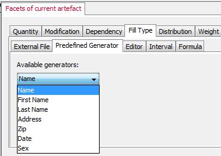

|
||||||||||
| PREV CLASS NEXT CLASS | FRAMES NO FRAMES | |||||||||
| SUMMARY: NESTED | FIELD | CONSTR | METHOD | DETAIL: FIELD | CONSTR | METHOD | |||||||||
public interface ObservableGenerator
To get the possibility to register and un-register to generators we use the Observer Pattern. Each time an observer registers to an pre-defined generator the generator will be registered and listed in the UI. In other words, a generator is as soon available as an observer registers to it. The same holds, when an observer removes itself or un-registers.
Usually observers are used to get notified when a change in the subject happens. But we use the notification to list registered generators in the UI, rather than getting notified about structural changes. The image below show registered pre-defined generators.  As the image shows, if an observer registers itself to an available subject (generator), the subject gets listed in the list. And vice versa when un-registered. Observer Pattern Observer defines a one-to-many dependency between objects, so that when one object changes state, all its dependents are notified and updated automatically. This defines the subject to observe. It's possible that more objects (observers) observe a subject (observable). But there's always only one subject to observe. That's the one-to-many dependency. Many observers, but one subject.
| Method Summary | |
|---|---|
void |
notifyObserverGenerator(boolean add)
Here's the fun part; this is where we tell all observers about the state. |
void |
registerObserverGenerator(ObserverGenerator observer)
When an observer registers, it's just added to the end of the observer list. |
void |
removeObserverGenerator(ObserverGenerator observer)
Likewise, when an observer wants to un-register we just take it off the list. |
| Method Detail |
|---|
void registerObserverGenerator(ObserverGenerator observer)
observer - an object to notify when a change occurs.void removeObserverGenerator(ObserverGenerator observer)
observer - an object which doesn't want any notifications anymore.void notifyObserverGenerator(boolean add)
add - here is the operation. There is one of two operations
possible.
|
||||||||||
| PREV CLASS NEXT CLASS | FRAMES NO FRAMES | |||||||||
| SUMMARY: NESTED | FIELD | CONSTR | METHOD | DETAIL: FIELD | CONSTR | METHOD | |||||||||